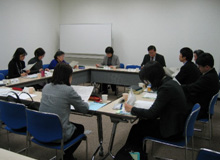

| ■議 題 |
| １． |
学習懇談会｢平成21年度埼玉県食品衛生監視指導計画｣(案)について |
| 主な変更点や今年度の重点的な取り組みについて説明されました。 |
| ＜主な変更点＞ |
 |
(基本的方向) |
| ・ |
昨年までは｢見はります｣と記述していたところを｢見はり・調べます｣と記述。監視だけでなく、必要に応じ行政検査や買い上げ検査を行うことを明記 |
| ・ |
｢顔が見えます｣では、具体的な監視指導と記述 |
| ・ |
｢自立しましょう｣では、自主衛生管理の体制の確立、自主衛生管理が確立した施設を応援 |
| ・ |
｢育てます｣では、県職員の次世代の食品安全のリーダーを研修等で育成 |
| (具体的施策) |
| ・ |
他部局との連携強化等記述。警察との連携・教育局との連携も明記 |
| ・ |
通常の監視指導事項では、大規模製造施設において食品の期限表示・期限設定に科学的根拠の有無・根拠の一覧設置 |
| ・ |
アレルギー物質の表示では現在義務付けられている５種類に加え、｢えび｣｢かに｣の表示(平成22年６月３日までは経過期間)の周知 |
| ・ |
自主回収情などの情報収集の項目を追加 |
 |
| ＜質疑応答＞（○は主な意見・質問、→は答え） |
| |
○ |
平成20年度の監視指導や検査は予定通りすすんでいるのですか？ |
| → |
違反食品が多く消費者からの問い合わせも増加しており、通常監視や検査は目いっぱいの状況です。 |
| ○ |
国は検査員を増やし検査数も増やしています。埼玉県でも検査を充実するようにしてほしい。 |
| ２． |
平成21年度さいたま市食品衛生監視指導計画(素案)に対する要望(案)について提案され意見交換しました。 |